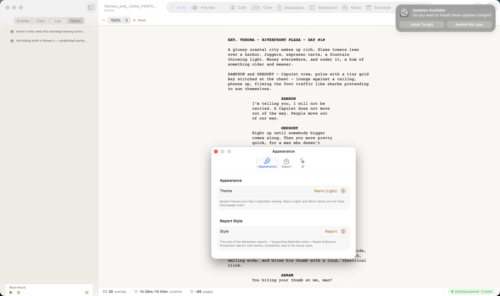
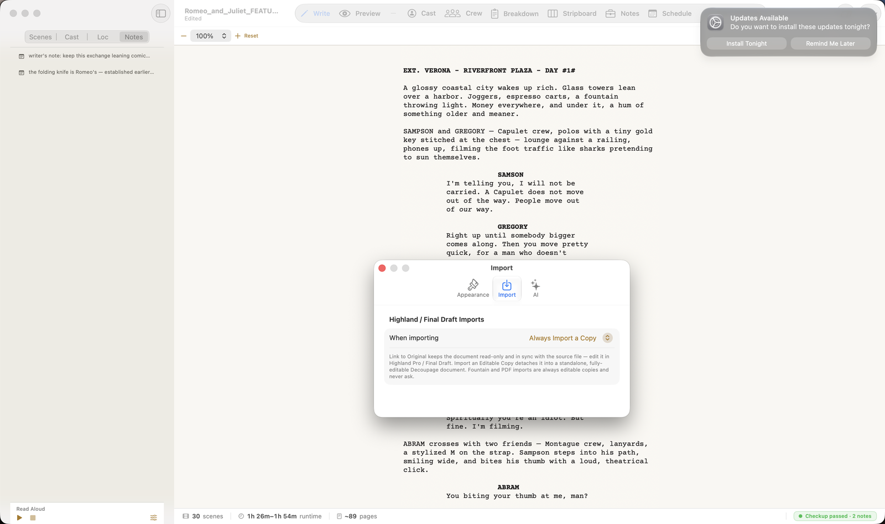
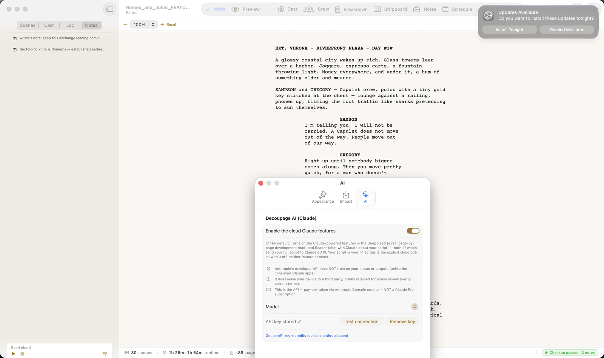

Appearance

- Theme — System follows your Mac's light/dark setting; Warm (Light) and Warm (Dark) are Decoupage's own fixed looks (warmer than the system grays).
- Report Style — the look of the Markdown-based reports (Supporting Materials notes, and Reads & Reports). Production reports — call sheets, schedules — always use the house style, so this doesn't touch them.
Import

When importing a Highland or Final Draft file, Decoupage can either:
- Import a Copy — a standalone, fully editable Decoupage document (write in Decoupage).
- Link to Original — keep it read-only and in sync with the source file (keep writing in the other app).
Set your default here so Decoupage stops asking. (Fountain and PDF imports are always editable copies.) This is covered in Getting Started → Opening & importing too.
AI

This is the home for the cloud AI tier — Reader and Deep Read. It's off by default; turning it on requires your own Anthropic API key, and you choose the model (Sonnet, Opus, or Haiku). Decoupage stores the key and shows only "API key stored ✓," never the key itself.
The full explanation of the two AI tiers — what's private and on-device versus what leaves your Mac — lives in AI in Decoupage. This tab is just where you switch the cloud tier on.
In short
- ✓⌘, opens Settings — three tabs: Appearance, Import, AI.
- ✓Appearance: Theme (System / Warm Light / Warm Dark) + the Markdown Report Style.
- ✓Import: default handling for Highland/FDX — editable copy or linked, read-only.
- ✓AI: enable the cloud Claude features (off by default), pick a model, store your key — see AI in Decoupage for the full picture.